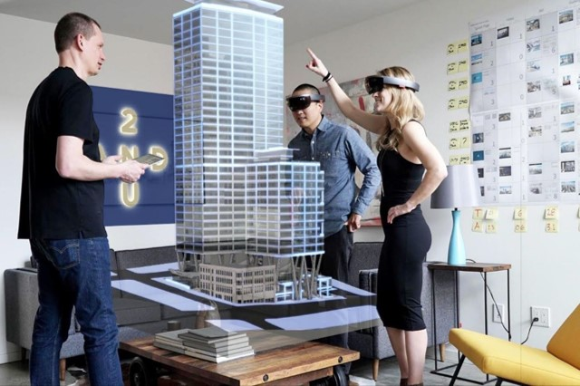

Html, sigla en inglés de HyperText Markup Language (lenguaje de marcas de hipertexto), hace referencia al lenguaje de marcado para la elaboración de páginas web. Es un estándar que sirve de referencia del software que conecta con la elaboración de páginas web en sus diferentes versiones, define una estructura básica y un código (denominado código HTML) para la definición de contenido de una página web, como texto, imágenes, videos, juegos, entre otros.
El lenguaje HTML basa su filosofía de desarrollo en la diferenciación. Para añadir un elemento externo a la página (imagen, vídeo, script, entre otros.), este no se incrusta directamente en el código de la página, sino que se hace una referencia a la ubicación de dicho elemento mediante texto. De este modo, la página web contiene solamente texto mientras que recae en el navegador web (interpretador del código) la tarea de unir todos los elementos y visualizar la página final.
Al ser un estándar, HTML busca ser un lenguaje que permita que cualquier página web escrita en una determinada versión, pueda ser interpretada de la misma forma (estándar) por cualquier navegador web actualizado.
Sin embargo, a lo largo de sus diferentes versiones, se han incorporado y suprimido diversas características, con el fin de hacerlo más eficiente y facilitar el desarrollo de páginas web compatibles con distintos navegadores y plataformas (PC de escritorio, portátiles, teléfonos inteligentes, tabletas, vipers etc.) No obstante, para interpretar correctamente una nueva versión de HTML, los desarrolladores de navegadores web deben incorporar estos cambios y el usuario debe ser capaz de usar la nueva versión del navegador con los cambios incorporados. Codigos de colores para html
Videos relacionado:
Css3 es la última evolución del lenguaje de las Hojas de Estilo en Cascada (Cascading Style Sheets), y pretende ampliar la versión CSS2.1. Trae consigo muchas novedades altamente esperadas , como las esquinas redondeadas, sombras, gradientes , transiciones o animaciones, y nuevos layouts como multi-columnas, cajas flexibles o maquetas de diseño en cuadrícula (grid layouts).
Las partes experimentales son particulares para cada navegador y deberían ser evitadas en entornos de producción, o usadas con extrema precaución, ya que tanto la sintaxis como la semántica pueden cambiar en el futuro.
Estados de los modulos css
Unos pocos módulos CSS son lo suficientemente estables y han alcanzado uno de los tres niveles de recomendación de CSSWG: Candidato (Candidate), Recomendación (Recommendation), Recomendación propuesta o Recomendación (Proposed Recommendation or Recommendation). Estos puden ser usados sin un prefijo y son muy estables aunque algunas características aun pueden ser eliminadas de la etapa de Candidate Recommendation.
Estos módulos extienden y mejoran la especificación CSS2.1 la cual construye el núcleo de la especificación. Juntos, son el snapshot actual de la especificación CSS, si quieres conocer la historia del css click aqui historia.
Javascript (abreviado comúnmente JS) es un lenguaje de programación interpretado, dialecto del estándar ECMAScript. Se define como orientado a objetos,3 basado en prototipos, imperativo, débilmente tipado y dinámico.
Se utiliza principalmente en su forma del lado del cliente (client-side), implementado como parte de un navegador web permitiendo mejoras en la interfaz de usuario y páginas web dinámicas4 aunque existe una forma de JavaScript del lado del servidor(Server-side JavaScript o SSJS). Su uso en aplicaciones externas a la web, por ejemplo en documentos PDF, aplicaciones de escritorio (mayoritariamente widgets) es también significativo.
Desde el 2012, todos los navegadores modernos soportan completamente ECMAScript 5.1, una versión de javascript. Los navegadores más antiguos soportan por lo menos ECMAScript 3. La sexta edición se liberó en julio del 2015.
JavaScript se diseñó con una sintaxis similar a C, aunque adopta nombres y convenciones del lenguaje de programación Java. Sin embargo, Java y JavaScript tienen semánticas y propósitos diferentes. si te gustaria saber mas de JS,historia,tutoriales,comunidad, solo dale click!
Las aplicaciones web progresivas ( PVA ) son aplicaciones web que son páginas web o sitios web regulares , pero que pueden aparecer al usuario como aplicaciones tradicionales o aplicaciones móviles nativas . El tipo de aplicación intenta combinar características ofrecidas por la mayoría de los navegadores modernos con los beneficios de una experiencia móvil.
Antecedentes
Desde alrededor de 2005 tecnologías de desarrollo web han pasado de estática a dinámica documentos impulsados por servidor ( PHP , ASP.NET ) y el lado del cliente (por ejemplo, Ajax ) herramientas y diseño web receptivo . A pesar de un impulso inicial para aplicaciones basadas en web basadas en estas tecnologías en dispositivos como el iPhone 2007, los intentos de aplicaciones web fallaron en comparación con las aplicaciones nativas. Las aplicaciones nativas proporcionan una mejor experiencia de usuario y se inician más rápido en comparación con tener que cargar en un navegador en tiempo de ejecución.
Los recursos empaquetados y el acceso directo al hardware permitieron a las aplicaciones nativas funcionar mucho más rápido y proporcionar más funciones. A mediados de la década de 2010, sin embargo, las continuas mejoras en HTML5 , CSS3 y JavaScript , navegadores web significativamente más capaces y compatibles con los estándares , junto con potentes procesadores como el A10 y Snapdragon 821 hicieron de las aplicaciones híbridas perfectas una alternativa viable.
Caracteristicas
Progresivo : funciona para todos los usuarios, independientemente de la opción del navegador, ya que están diseñados con mejoras progresivas como principio básico. Receptivo : ajuste cualquier factor de forma: escritorio, dispositivo móvil, tableta o formularios que aún no se hayan creado. Conectividad independiente : los trabajadores del servicio permiten el trabajo fuera de línea o en redes de baja calidad. Aplicación similar : se siente como una aplicación para el usuario con interacciones y navegación de estilo de aplicación. Fresco : siempre actualizado gracias al proceso de actualización del trabajador de servicio. Seguro : se sirve a través de HTTPS para evitar el espionaje y garantizar que el contenido no haya sido alterado. Detectable : son identificables como "aplicaciones" gracias a los manifiestos del W3C y al alcance del registro del trabajador de servicio que permite que los motores de búsqueda los encuentren. Reinglicable : haga que el nuevo compromiso sea fácil a través de funciones como notificaciones automáticas . Instalable : permite a los usuarios "conservar" las aplicaciones que les parecen más útiles en su pantalla de inicio sin la molestia de una tienda de aplicaciones. Vinculable : se comparte fácilmente a través de una URL y no requiere una instalación compleja.
La inteligencia artificial (IA), también llamada inteligencia computacional, es la inteligencia exhibida por máquinas. En ciencias de la computación, una máquina «inteligente» ideal es un agente racional flexible que percibe su entorno y lleva a cabo acciones que maximicen sus posibilidades de éxito en algún objetivo o tarea.1 Coloquialmente, el término inteligencia artificial se aplica cuando una máquina imita las funciones «cognitivas» que los humanos asocian con otras mentes humanas, como por ejemplo: «aprender» y «resolver problemas». A medida que las máquinas se vuelven cada vez más capaces, tecnología que alguna vez se pensó que requería de inteligencia se elimina de la definición. Por ejemplo, el reconocimiento óptico de caracteres ya no se percibe como un ejemplo de la «inteligencia artificial» habiéndose convertido en una tecnología común. Avances tecnológicos todavía clasificados como inteligencia artificial son los sistemas de conducción autónomos o los capaces de jugar al ajedrez o al Go.
Según Takeyas (2007) la IA es una rama de las ciencias computacionales encargada de estudiar modelos de cómputo capaces de realizar actividades propias de los seres humanos en base a dos de sus características primordiales: el razonamiento y la conducta.
En 1956, John McCarthy acuñó la expresión «inteligencia artificial», y la definió como «la ciencia e ingenio de hacer máquinas inteligentes, especialmente programas de cómputo inteligentes».
Varios ejemplos se encuentran en el área de control de sistemas, planificación automática, la habilidad de responder a diagnósticos y a consultas de los consumidores, reconocimiento de escritura, reconocimiento del habla y reconocimiento de patrones. Los sistemas de IA actualmente son parte de la rutina en campos como economía, medicina, ingeniería y la milicia, y se ha usado en gran variedad de aplicaciones de software, juegos de estrategia, como ajedrez de computador, y otros videojuegos.
El aprendizaje automático o aprendizaje automatizado o aprendizaje de máquinas (del inglés, "Machine Learning") es el subcampo de las ciencias de la computación y una rama de la inteligencia artificial, cuyo objetivo es desarrollar técnicas que permitan que las computadoras aprendan. De forma más concreta, se trata de crear programas capaces de generalizar comportamientos a partir de una información suministrada en forma de ejemplos.
Es, por lo tanto, un proceso de inducción del conocimiento. En muchas ocasiones el campo de actuación del aprendizaje automático se solapa con el de la estadística computacional, ya que las dos disciplinas se basan en el análisis de datos. Sin embargo, el aprendizaje automático también se centra en el estudio de la complejidad computacional de los problemas.
Muchos problemas son de clase NP-hard, por lo que gran parte de la investigación realizada en aprendizaje automático está enfocada al diseño de soluciones factibles a esos problemas. El aprendizaje automático puede ser visto como un intento de automatizar algunas partes del método científico mediante métodos matemáticos.
El aprendizaje automático tiene una amplia gama de aplicaciones, incluyendo motores de búsqueda, diagnósticos médicos, detección de fraude en el uso de tarjetas de crédito, análisis del mercado de valores, clasificación de secuencias de ADN, reconocimiento del habla y del lenguaje escrito, juegos y robótica.
Aprendizaje profundo (en inglés, deep learning) es un conjunto de algoritmos de clase aprendizaje automático (en inglés, machine learning) que intenta modelar abstracciones de alto nivel en datos usando arquitecturas compuestas de transformaciones no lineales múltiples.
El aprendizaje profundo es parte de un conjunto más amplio de métodos de aprendizaje automático basados en asimilar representaciones de datos.
Una observación (por ejemplo, una imagen) puede ser representada en muchas formas (por ejemplo, un vector de píxeles), pero algunas representaciones hacen más fácil aprender tareas de interés (por ejemplo, "¿es esta imagen una cara humana?") sobre la base de ejemplos, y la investigación en este área intenta definir qué representaciones son mejores y cómo crear modelos para reconocer estas representaciones.
Varias arquitecturas de aprendizaje profundo, como redes neuronales profundas, redes neuronales profundas convolucionales, y redes de creencia profundas, han sido aplicadas a campos como visión por computador, reconocimiento automático del habla, y reconocimiento de señales de audio y música, y han mostrado producir resultados de vanguardia en varias tareas.
Las redes neuronales (también conocidas como sistemas conexionistas) son un modelo computacional basado en un gran conjunto de unidades neuronales simples ( neuronas artificiales), de forma aproximadamente análoga al comportamiento observado en los axones de las neuronas en los cerebros biológicos. Cada unidad neuronal está conectada con muchas otras y los enlaces entre ellas pueden incrementar o inhibir el estado de activación de las neuronas adyacentes. Cada unidad neuronal, de forma individual, opera empleando funciones de suma. Puede existir una función limitadora o umbral en cada conexión y en la propia unidad, de tal modo que la señal debe sobrepasar un límite antes de propagarse a otra neurona. Estos sistemas aprenden y se forman a sí mismos, en lugar de ser programados de forma explícita, y sobresalen en áreas donde la detección de soluciones o características es difícil de expresar con la programación convencional.
Las redes neuronales suelen consistir en varias capas o un diseño de cubo, y la ruta de la señal atraviesa de adelante hacia atrás. Propagación hacia atrás es donde se utiliza la estimulación hacia adelante o en el "frente" para restablecer los pesos de las unidades neuronales y esto a veces se realiza en combinación con una formación en la que se conoce el resultado correcto. Las redes modernas son un poco más libres en el sentido de que fluye en términos de estimulación e inhibición con conexiones que interactúan de una manera mucho más caótica y compleja.
El objetivo de la red neuronal es resolver los problemas de la misma manera que el cerebro humano, aunque las redes neuronales son más abstractas. Los proyectos de redes neurales modernas suelen trabajar desde unos miles a unos pocos millones de unidades neuronales y millones de conexiones que, si bien son muchas órdenes, siguen siendo de una magnitud menos compleja que la del cerebro humano, más bien cercana a la potencia de cálculo de un gusano.
Nuevas investigaciones sobre el cerebro a menudo estimulan la creación de nuevos patrones en las redes neuronales. Un nuevo enfoque está utilizando conexiones que se extienden mucho más allá y capas de procesamiento de enlace en lugar de estar siempre localizado en las neuronas adyacentes. Otra investigación está estudiando los diferentes tipos de señal en el tiempo que los axones se propagan, como el aprendizaje profundo , interpola una mayor complejidad que un conjunto de variables booleanas que son simplemente encendido o apagado.
Una criptomoneda, criptodivisa (del inglés cryptocurrency) o criptoactivo es un medio digital de intercambio. La primera criptomoneda que empezó a operar fue el bitcoin en 2009 y, desde entonces, han aparecido muchas otras con diferentes características y protocolos como Litecoin, Ethereum, Ripple, Dogecoin.
En los sistemas de criptomonedas, se garantiza la seguridad, integridad y equilibrio de sus estados de cuentas (contabilidad) por medio de un entramado de agentes (transferencia de archivo segmentada o transferencia de archivo multifuente) que se verifican (desconfían) mutuamente llamados mineros, que son, en su mayoría, público en general y protegen activamente la red (el entramado) al mantener una alta tasa de procesamiento de algoritmos, con la finalidad de tener la oportunidad de recibir una pequeña propina, que se reparte de manera aleatoria.
Romper la seguridad existente en una criptomoneda es matemáticamente posible, pero el costo para lograrlo sería inasumiblemente alto. Por ejemplo, un atacante que intentase quebrar el sistema de prueba de trabajo de Bitcoin necesitaría una potencia computacional mayor que el de todo el entramado (red-enjambre) de todos los mineros del sistema, y aun así, solo tendría una probabilidad de éxito del 50% (n.º de ronda de autenticación), en otras palabras, romper la seguridad de Bitcoin exigiría una capacidad superior a la de empresas tecnológicas del tamaño de Google
Las criptomonedas hacen posible el llamado internet del valor, también conocido por las siglas IoV (del inglés internet of value), también llamado Internet del dinero: son aplicaciones de Internet que permiten el intercambio de valor en forma de criptomonedas.
Una cadena de bloques o cadena articulada, conocida en inglés como blockchain, es una estructura de datos en la que la información contenida se agrupa en conjuntos (bloques) a los que se les añade metainformaciones relativas a otro bloque de la cadena anterior en una línea temporal, de manera que gracias a técnicas criptográficas, la información contenida en un bloque sólo puede ser repudiada o editada modificando todos los bloques posteriores. Esta propiedad permite su aplicación en entorno distribuido de manera que la estructura de datos blockchain puede ejercer de base de datos pública no relacional que contenga un histórico irrefutable de información.
Aplicaciones
En el campo de las criptomonedas la cadena de bloques se usa como notario público no modificable de todo el sistema de transacciones a fin de evitar el problema de que una moneda se pueda gastar dos veces. Por ejemplo es usada en Bitcoin, Ethereum,Dogecoin y Litecoin, aunque cada una con sus particularidades .
En el campo de las bases de datos de registro de nombres la cadena de bloques es usada para tener un sistema de notario de registro de nombres de tal forma que un nombre solo pueda ser utilizado para identificar el objeto que lo tiene efectivamente registrado. Es una alternativa al sistema tradicional de DNS. Por ejemplo es usada en Namecoin.
Uso como notario distribuido en distintos tipos de transacciones haciéndolas más seguras, baratas y rastreables. Por ejemplo se usa para sistemas de pago, transacciones bancarias (dificultando el lavado de dinero), envío de remesas, préstamos y en los sistemas de gestión de activos digitales puede ser usado con distintos propósitos.
La seguridad informática, también conocida como ciberseguridad o seguridad de tecnologías de la información, es el área relacionada con la informática y la telemática que se enfoca en la protección de la infraestructura computacional y todo lo relacionado con esta y, especialmente, la información contenida en una computadora o circulante a través de las redes de computadoras.
La ciberseguridad comprende software ( bases de datos, metadatos, archivos), hardware, redes de computadoras y todo lo que la organización valore y signifique un riesgo si esta información confidencial llega a manos de otras personas, convirtiéndose, por ejemplo, en información privilegiada.
La definición de seguridad de la información no debe ser confundida con la de «seguridad informática», ya que esta última solo se encarga de la seguridad en el medio informático, pero la información puede encontrarse en diferentes medios o formas, y no solo en medios informáticos.
La seguridad informática es la disciplina que se encarga de diseñar las normas, procedimientos, métodos y técnicas destinados a conseguir un sistema de información seguro y confiable.
La realidad virtual (RV) es un entorno de escenas u objetos de apariencia real. La acepción más común refiere a un entorno generado mediante tecnología informática, que crea en el usuario la sensación de estar inmerso en él. Dicho entorno es contemplado por el usuario a través de un dispositivo conocido como gafas o casco de realidad virtual. Este puede ir acompañado de otros dispositivos, como guantes o trajes especiales, que permiten una mayor interacción con el entorno así como la percepción de diferentes estímulos que intensifican la sensación de realidad.
Tipos
Simuladores : El primer tipo es a través de un simulador de realidad virtual. Los simuladores de conducción de vehículos, por ejemplo, dan a los usuarios a bordo la impresión de que están llevando un vehículo real, ya que predice el movimiento del vehículo al dar una orden y recibir la correspondiente respuesta visual y auditiva (apretamos el acelerador y vemos en la pantalla cómo el coche se mueve más rápido y escuchamos como suben las revoluciones del vehículo).
Avatares : Con los avatares los usuarios pueden unirse al entorno virtual de dos formas: ) Eligiendo un avatar prediseñado con gráficos de ordenador. ) Realizando una grabación de sí mismo a través de un dispositivo de vídeo. En el caso de la grabación a través de una cámara web, el fondo de la imagen se elimina para contribuir a una mayor sensación de realidad.
Proyección de imágenes reales: En la proyección de imágenes reales aplicadas en la realidad virtual, el diseño gráfico de entornos reales juega un papel vital en algunas aplicaciones como por ejemplo: Navegación autónoma y construcción del diseño gráfico de simuladores de vuelo. Este tipo de RV está ganando popularidad sobre todo en gráficos diseñados por ordenador, ya que mejora el realismo utilizando imágenes foto-realistas y el proceso de modelado es bastante más sencillo.
La realidad aumentada (RA) es el término que se usa para definir la visión de un entorno físico del mundo real, a través de un dispositivo tecnológico. Este dispositivo o conjunto de dispositivos, añaden información virtual a la información física ya existente; es decir, una parte sintética virtual a la real. De esta manera; los elementos físicos tangibles se combinan con elementos virtuales, creando así una realidad aumentada en tiempo real.
La realidad aumentada es diferente de la realidad virtual: sobre la realidad material del mundo físico monta una realidad visual generada por la tecnología, en la que el usuario percibe una mezcla de las dos realidades; en cambio, en la realidad virtual el usuario se aísla de la realidad material del mundo físico para sumergirse en un escenario o entorno totalmente virtual.
Definiciones
En torno a 1992, Tom Caudell acuñó el término realidad aumentada, sucediéndose posteriormente medios y definiciones relativos a ella. Una de ellas fue dada por Ronald Azuma (1997). La definición de Azuma dice que la realidad aumentada: Combina elementos reales y virtuales. Es interactiva en tiempo real. Está registrada en 3D.
La realidad aumentada también supone la incorporación de datos e información digital en un entorno real, por medio del reconocimiento de patrones que se realiza mediante un software.

La realidad mixta (RM), también llamada a veces realidad híbrida, es la combinación de realidad virtual y realidad aumentada. Esta combinación permite crear nuevos espacios en los que interactúan tanto objetos y/o personas reales como virtuales. Es decir, se puede considerar como una mezcla entre la realidad, realidad aumentada, virtualidad aumentada y realidad virtual.
El término realidad mixta no debe confundirse con el de realidad aumentada o RA. La realidad aumentada genera los estímulos a tiempo real para la interacción del usuario, los cuales se superponen sobre el entorno físico de este, mientras que la realidad mixta no sólo permite la interacción del usuario con el entorno virtual sino que también permite que objetos físicos del entorno inmediato del usuario sirvan como elementos de interacción con el entorno virtual.
En 1994 Paul Milgram y Fumio Kishino definieron el concepto de realidad mixta como cualquier espacio entre los extremos del continuo de la virtualidad. Este continuo de la virtualidad se extiende desde el mundo completamente real hasta el entorno completamente virtual, encontrándose entre medio de estos la realidad aumentada y realidad virtual.
El mundo virtual Second Life permite que el usuario o avatar, pueda asistir a clases en la Universidad de Harvard. En estas clases se pueden ver en una pantalla al profesor, como si el avatar estuviese realmente siguiendo una clase en la universidad. Se tratará de realidad mixta si esta proyección del profesor de Harvard en la clase de Second Life es a tiempo real.
Internet de las cosas (en inglés, Internet of Things, abreviado IoT; IdC, por sus siglas en español ) es un concepto que se refiere a la interconexión digital de objetos cotidianos con Internet.
Alternativamente, Internet de las cosas es la conexión de Internet con más cosas u objetos que con personas. También, se suele conocer como Internet de todas las cosas o Internet en las cosas. Si los objetos de la vida cotidiana tuvieran incorporadas etiquetas de radio, podrían ser identificados y gestionados por otros equipos, de la misma manera que si lo fuesen por seres humanos.
El concepto de Internet de las cosas fue propuesto por Kevin Ashton en el Auto-ID Center del MIT en 1999, donde se realizaban investigaciones en el campo de la identificación por radiofrecuencia en red (RFID) y tecnologías de sensores.
Por ejemplo, si los libros, termostatos, refrigeradores, la paquetería, lámparas, botiquines, partes automotrices, entre otros, estuvieran conectados a Internet y equipados con dispositivos de identificación, no existirían, en teoría, artículos fuera de stock o medicinas caducas; sabríamos exactamente la ubicación, cómo se consumen en el mundo; el extravío sería cosa del pasado, y sabríamos qué está encendido y qué está apagado en todo momento.
La ingeniería mecatrónica es una disciplina que sirve para diseñar y desarrollar productos que involucren sistemas de control para el diseño de productos o procesos inteligentes, lo cual busca crear maquinaria más compleja para facilitar las actividades del ser humano a través de procesos electrónicos en la industria mecánica, principalmente.
Esta disciplina une la ingeniería mecánica, ingeniería electrónica, ingeniería de control e ingeniería informática. Debido a que combina varias ingenierías en una sola, su punto fuerte es la versatilidad.
Un consenso común es describir a la mecatrónica como una disciplina integradora de las áreas de mecánica, electrónica e informática cuyo objetivo es proporcionar mejores productos, procesos y sistemas industriales. La mecatrónica no es, por tanto, una nueva rama de la ingeniería, sino un concepto recientemente desarrollado que enfatiza la necesidad de integración y de una interacción intensiva entre diferentes áreas de la ingeniería.
Con base en lo anterior, se puede hacer referencia a la definición propuesta por J. A. Rietdijk: "Mecatrónica es la combinación sinérgica de la ingeniería mecánica de precisión, de la electrónica, del control automático y de los sistemas para el diseño de productos y procesos", la cual busca crear maquinaria más compleja para facilitar las actividades del ser humano a través de procesos electrónicos en la industria mecánica principalmente.
La impresión 3D es cualquiera de varios procesos en los que el material se une o solidifica bajo el control de la computadora para crear un objeto tridimensional , con material que se agrega (como moléculas líquidas o granos de polvo fusionados).
La impresión 3D se utiliza tanto en prototipos rápidos como en fabricación aditiva (AM). Los objetos pueden ser de casi cualquier forma o geometría y generalmente se producen utilizando datos de modelos digitales de un modelo 3D u otra fuente de datos electrónicos, como un archivo de Archivo de Fabricación Aditiva (AMF) (generalmente en capas secuenciales). Hay muchas tecnologías diferentes , como la estereolitografía(SLA) o modelado de depósitos fusionados (FDM). Por lo tanto, a diferencia del material eliminado de un stock en el proceso de mecanizado convencional, la impresión 3D o AM crea un objeto tridimensional a partir de un modelo de diseño asistido por computadora (CAD) o archivo AMF, generalmente añadiendo sucesivamente material capa por capa.
El término "impresión 3D" originalmente se refería a un proceso que deposita un material aglutinante sobre un lecho de polvo con cabezales de impresora de inyección de tinta capa por capa. Más recientemente, el término se está utilizando en la lengua vernácula popular para abarcar una variedad más amplia de técnicas de fabricación aditiva. Los Estados Unidos y las normas técnicas mundiales utilizan el término oficial de fabricación aditiva en este sentido más amplio.
A principios de la década de 2010, los términos impresión 3D y fabricación aditiva evolucionaron sentidos en los que se alternaban términos genéricos para las tecnologías AM, uno utilizado en la lengua vernácula popular por las comunidades de consumidores y los medios, y el otro utilizado más formalmente por AM industrial -utilizar fabricantes de piezas, fabricantes de máquinas AM y organizaciones de estándares técnicos globales. Hasta hace poco, el término impresión 3D se ha asociado con máquinas de bajo precio o capacidad.
En telecomunicaciones, 5G son las siglas utilizadas para referirse a la quinta generación de tecnologías de telefonía móvil. Es la sucesora de la tecnología 4G. Actualmente se encuentra sin estandarizar y las empresas de telecomunicación están desarrollando sus prototipos. Está previsto que su uso común sea en 2020.
La compañía sueca Ericsson aún no ha conseguido alcanzar velocidades de 5 Gbps reales, con demostraciones en directo del estándar previo a la tecnología de red (preestándar) 5G.
En noviembre de 2014, Huawei anuncia la firma de un acuerdo con la operadora móvil rusa Megafon para estandarizar y desarrollar redes 5G de prueba, en vistas a la Copa Mundial de Fútbol de 2018.
En febrero de 2017, la Unión Internacional de Telecomunicaciones (UIT) dependiente de Naciones Unidas reveló alguna de las especificaciones de la tecnología 5G. Entre ellas se incluyen: velocidades de descarga mínimas de 20 Gbps y 10 Gbps de subida, y una latencia de 4 ms. Se pretende optimizar los dispositivos para hacerlo lo más eficiente posible para el Internet de las cosas (IoT, por sus siglas en inglés). Está previsto que todo el mundo utilice esa conectividad en 2025.
A continuacion se va a presentar un resumen de todo el contenido visto en la pagina:
Html, sigla en inglés de HyperText Markup Language (lenguaje de marcas de hipertexto), hace referencia al lenguaje de marcado para la elaboración de páginas web.
El css3, este es el encargado de darle estilo y dinamismo a nuestra pagina web.
Este es un lenguaje de programación, y Se define como orientado a objetos,3 basado en prototipos, imperativo, débilmente tipado y dinámico.
Esta son aplicaciones web o sitios web, que evolucionan, es decir se actulizan y se adaptan a la herramienta tecnologica
La inteligencia artificial, en resumen es cuando una maquina imita el comportamiento de un humano
El machine learning se encarga de hacer que las maquinas aprendan a tomar decisiones simples por ella misma, y que estas vayan aprendiendo a medidas que pasa el tiempo.
El deep leaning es parecido al machine learning, pero con la diferencia de que este se adentra mas en las tomas de decisiones de las maquina.
Tambien llamadas sistemas conexionista el principal de esta red es resolver los problemas de la misma manera que el cerebro humano, aunque las redes neuronales son más abstractas.
Se puede decir que la criptomonedas es un medio por el cual se intercambia algo, y la primera criptomoneda fue la bitcoin.
La blockchain o cadena de bloques es un sistema informático conformado por una red de computadoras (los nodos).
En resumen la cyberseguridad se encarga de proteger la infraestructura computacional y todo lo relacionado con esta.
La realidad virtual consiste en crear un entorno virtual que simule o replique un lugar existente o imaginario, permitiendo interactuar con los elementos allí ubicados. De ahí viene su nombre: es un entorno totalmente virtual. Consiste en simular un entorno tridimensional y adicionalmente, con la posibilidad de incorporar información sensorial: audio, movimiento de las manos… con el objetivo final de conseguir que el usuario sienta que está en un lugar dado y pueda interactuar con él.
La realidad aumentada consiste en la mezcla de contenido digital con contenido físico para construir una realidad mixta en tiempo real.
La realidad mixta es la combinacion de la realidad virtual con la realidad aumentada, la cual permite interactuar con los objetos y personas.
El internet de las cosas consiste en que todos los objetos cotidiano se conecten a la red, como por jemplos: reloj,vestimenta, entre otros.
La Mecatrónica surge de la combinación sinérgica de distintas ramas de la Ingeniería. Su principal propósito es el análisis y diseño de productos y de procesos de manufactura automatizados
La impresion 3d es la creacion de objetos tridimensional. la impresion 3d e utiliza tanto en prototipos rápidos como en fabricación aditiva (AM).
La tecnologia 5g es una evolucion de la 4g, eso quiere decir que la transferencia de informacion va hacer mucho mas rapido. Esta tecnologia esta prevista que pueda ser utilizada por todo el mundo en el 2025.
Luis Enrique Rodriguez Gonzalez 15-EISM-1-054 Seminario de tecnologia
Seminario de tecnologia